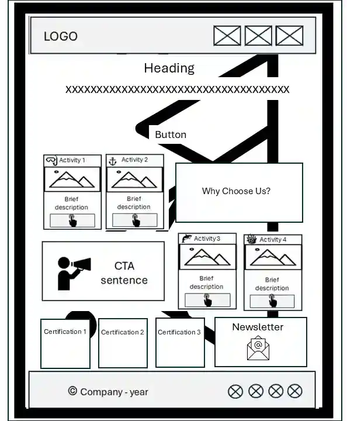
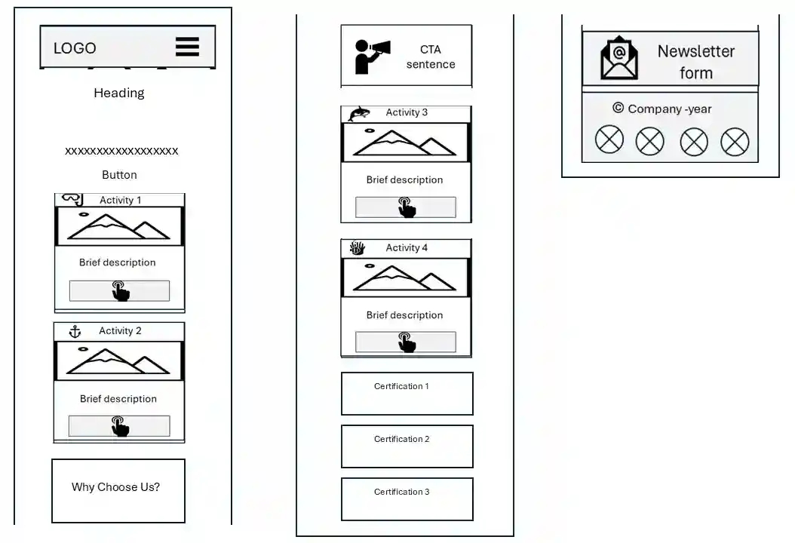

The Logo and the Name
Bahia Aquática
The name represents a fictitious diving operator showcasing real activities offered by professional diving operators in Salvador, cities, and islands in the Todos os Santos Bay, located in the Brazilian state of Bahia.
Our mission is to showcase the underwater side of a Bahia known worldwide for its magnificent surface.
Domain (optional): www.bahiaquatica.com.br
Site Purpose
The site provides information, for tourists and natives, about scuba diving activities, recommended sites, and seasonal whale watching.
Scenarios
- Can I dive if I have not taken any courses?
- What is the best shipwreck dive site?
- When is the peak season for whale watching?
- Are there shore-based options for whale watching?
Color Schema
#4deada
Header, footer, headings accent
#0e3769
Primary branding & backgrounds
#c0392b
Buttons & callouts
#FFFFFF
Body text & card backgrounds
Typography
Poppins
Main title, headings, and subheaders
Lato
Body paragraph text and footer details
Wireframes
Desktop View

Mobile View
